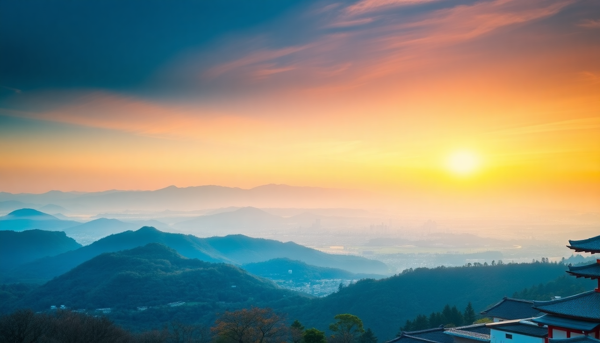

Best Day Trips from Kyoto: Nara, Uji & More

If you’re based in Kyoto for a few days, you’d be mad not to take at least one day trip. The region around Kyoto is dense with stuff that’s genuinely different—temples in deer parks, matcha fields, and even a quick bullet-train hop to another food city. I’ve done all of these myself, and here’s what actually works, what’s overhyped, and how to not waste your daylight on a train platform.
Why take a day trip from Kyoto instead of staying in the city?
Kyoto is incredible, but it’s also exhausting. Temples, crowds, and the constant shuffle of sandals get old by day three. A day trip gives you a change of pace—literally. Nara is greener and flatter, Uji is slower and smaller, and Osaka feels like a different planet. You don’t need to pack or check out; just hop a local train and be back in time for dinner. I found that alternating a heavy Kyoto day with a lighter trip kept me from burning out.
Is Nara worth the hype, or is it just deer?
Nara is worth it, but go in with the right expectations. The deer in Nara Park are the main draw, and they’re not shy—they’ll bow for crackers and then nudge you for more. But the real reason to go is Tōdai-ji temple, which houses a 15-meter bronze Buddha inside the world’s largest wooden building. It’s genuinely jaw-dropping, even after a week of temples.
- Tōdai-ji – The main event. Go early (before 10 AM) to avoid the worst crowds.
- Nara Park – The deer are everywhere. Buy a pack of shika senbei (deer crackers) for ¥200 from the old ladies near the entrance.
- Kōfuku-ji – A five-story pagoda and a small museum with good Buddhist art. Free grounds.
- Nakatanidou – Famous for mochi pounding. Watch them slam a hammer into sticky rice, then buy the fresh mochi. It’s a tourist show, but the mochi is legit.
- Mizuya Chagama – A quiet tea house near the park. Good for a break from the deer chaos.
Getting there: Take the Kintetsu Nara Line from Kyoto Station (Kintetsu Kyoto Station, not JR). It’s 35 minutes and ¥760. The JR Nara Line takes longer and drops you farther from the park. I always use Kintetsu.
What’s the best way to see Uji for tea and temples?
Uji is a half-day trip, and that’s perfect. It’s the birthplace of Japanese green tea, and the town is small enough that you can walk from the station to Byōdō-in temple, then across the bridge to the tea shops without a bus. The vibe is sleepy and local—nothing like Kyoto’s crush.
- Byōdō-in – The temple on the 10-yen coin. The Phoenix Hall reflects in the pond, and the interior has a wooden Amida Buddha. The garden is free; the hall costs ¥600.
- Nakamura Tokichi Honten – The best matcha parfait I’ve ever had. Get the matcha parfait with warabi mochi. There’s always a line, but it moves fast.
- Tsuen Tea – A tea shop that’s been around since 1160. Yes, 1160. Buy loose-leaf matcha or sit for a bowl of matcha with a sweet. The old woman running it is a legend.
- Uji River – Walk along the banks. In summer, you’ll see people on kawadoko (river platforms) eating. It’s peaceful and free.
- Mimuroto-ji – A 15-minute bus ride from Uji station. Only go in late April or early May when the wisteria is in full bloom. Otherwise skip it.
Getting there: JR Nara Line from Kyoto Station to Uji Station, 20 minutes, ¥240. Or take the Keihan Uji Line from Sanjō in Kyoto—same time, slightly different route.
Should I do Osaka as a day trip from Kyoto?
Yes, but only if you want food and neon, not temples. Osaka is a 30-minute train ride from Kyoto, and it’s a completely different energy. Dōtonbori at night is sensory overload in the best way—giant mechanical crab signs, steam rising from takoyaki stalls, and crowds that make Shibuya look empty. I’d skip Osaka Castle (it’s a concrete reconstruction) and focus on eating and walking.
- Dōtonbori – The main canal street. Walk from Dōtonbori Bridge to Namba. Go after 5 PM for the lights.
- Kuromon Ichiba Market – A covered market with grilled seafood, skewers, and fresh fruit. Try the scallop with butter and the toro (fatty tuna) sushi.
- Shinsekai – Old-school Osaka. Cheaper and grittier than Dōtonbori. Eat kushikatsu (deep-fried skewers) at Yoshino.
- Osaka Station City – If you need shopping or a rain backup. The rooftop garden is free and quiet.
- Umeda Sky Building – The floating observatory. Worth it for the view, but it’s a tourist magnet. Go at sunset.
Getting there: JR Special Rapid Service from Kyoto Station to Osaka Station, 30 minutes, ¥580. Or the Hankyu Line from Kawaramachi to Umeda, same time, slightly cheaper.
Are there any quieter day trips from Kyoto worth considering?
If you’re tired of crowds, two options work well: Kurama/Kibune and Ōtsu. Kurama is a mountain village 30 minutes north of Kyoto by train, with a temple and an onsen. Kibune is the next stop, famous for dining on platforms over the river in summer. Ōtsu is just across Lake Biwa, with a massive temple called Enryaku-ji on Mount Hiei.
- Kurama-dera – A temple up a steep forest path. The hike takes 45 minutes and ends with a good view. Combine with Kibune for a loop.
- Kibune – River dining (kawadoko) from May to September. Reserve at Hirobun a week ahead, or just walk the main street.
- Enryaku-ji – The head temple of Tendai Buddhism. It’s huge, spread across three areas on the mountain. Take the cable car up from Sakamoto (on the Ōtsu side).
- Lake Biwa – Rent a bike at Ōtsu Station and ride the lakeside path. The water is clear, and there are cheap izakayas near the port.
Getting there: For Kurama/Kibune, take the Eizan Line from Demachiyanagi Station. For Ōtsu, take the JR Biwako Line from Kyoto Station to Ōtsu Station, 10 minutes.
What’s the best way to get around for these trips?
The key is using the right train line for each destination. A JR Pass helps if you have one for a longer trip, but for these day trips, you don’t need it. The Kintetsu line is better for Nara, the Keihan line is better for Uji, and the Hankyu line is better for Osaka. I buy an IC card (ICOCA or Suica) at any station ticket machine—it works on all trains, buses, and even convenience stores. No need to buy individual tickets.
- ICOCA card – Refillable, works on JR and private lines. Buy at Kyoto Station for ¥2,000 (¥500 deposit, ¥1,500 balance).
- Kintetsu Kyoto Station – For Nara. It’s under the Kyoto Tower building, not the main JR station.
- Keihan Sanjō Station – For Uji. A 5-minute walk from Gion.
- Hankyu Kawaramachi Station – For Osaka. In the basement of the Hankyu department store.
FAQ
Is Nara too touristy? Should I skip it? It’s touristy around the deer park and Tōdai-ji, but not in a bad way. The crowds are manageable if you go by 9 AM. The deer are genuinely fun, and the temple is world-class. I wouldn’t skip it—just don’t expect a wilderness experience.
Can I do Uji and Nara in the same day? Technically yes, but I wouldn’t. They’re on different train lines (Kintetsu for Nara, JR/Keihan for Uji), and you’ll spend too much time transferring. Pick one, do it well, and have a relaxed afternoon. If you’re dead set on both, start in Nara at 8 AM, then take the Kintetsu train from Nara to Uji (change at Ōkubo)—it takes about 90 minutes total.
What should I eat in Uji besides matcha? Matcha is the star, but don’t miss soba (buckwheat noodles) at Soba-dokoro Kiraku, a 5-minute walk from Byōdō-in. They serve it cold with a light broth. Also try matcha soba if you want the crossover. For a savory lunch, Ramen Uji near the station does a decent tonkotsu ramen.
Conclusion
- Nara is a full day. Go for Tōdai-ji and the deer, use Kintetsu line, and eat mochi at Nakatanidou.
- Uji is a half day. Go for Byōdō-in and matcha parfait at Nakamura Tokichi. Skip Mimuroto-ji unless it’s wisteria season.
- Osaka is a night trip. Go for Dōtonbori and Kuromon market, not the castle.
- Kurama/Kibune and Ōtsu are good alternatives if you want fewer tourists and more nature.
- Use an IC card for all trains. No need for a JR Pass for these trips alone.